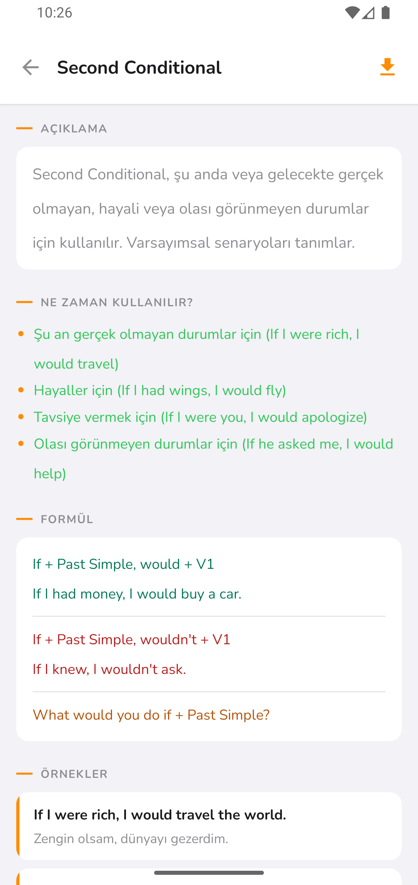
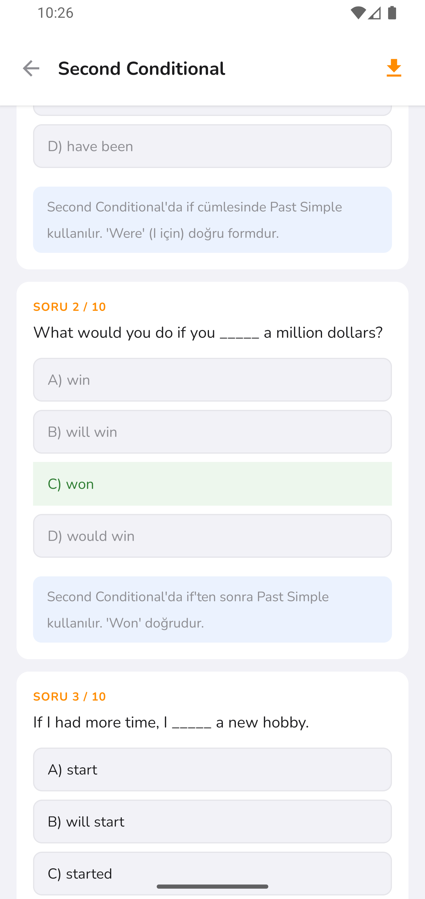

Uygulama Özellikleri
YÖKDİL gramer çalışmasını daha düzenli hale getirir.
Konu anlatımı, akademik örnekler, açıklamalı quizler ve PDF dışa aktarma ile her konuyu daha sistemli çalışabilirsiniz.
01
YÖKDİL odaklı konu anlatımı
Konular genel İngilizce mantığıyla değil, YÖKDİL'de karşınıza çıkan akademik cümle yapıları dikkate alınarak hazırlanır.
- ✓ Türkçe açıklamalı gramer anlatımı
- ✓ Akademik örnek cümleler
- ✓ Sınavda sık karıştırılan yapılar

02
Açıklamalı YÖKDİL mini quizleri
Her konunun sonunda yer alan sorular, sadece doğru cevabı göstermek için değil; neden doğru olduğunu açıklamak için hazırlanmıştır.
- ✓ Konu bazlı mini quizler
- ✓ Doğru cevap açıklamaları

03
PDF olarak dışa aktar
Çalıştığınız gramer konusunu PDF olarak dışa aktarabilir, daha sonra tekrar etmek için kendi konu notunuzu oluşturabilirsiniz.
- ✓ Konu özeti PDF çıktısı
- ✓ Örnek cümleler ve çeviriler